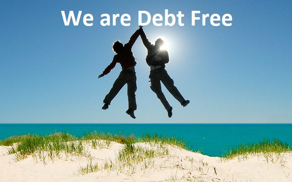

Over 40% of Americans buy more things than they have. If this trend continues, they
will have more debt. Getting a job is a big step anyone will have toward their
future. It is wonderful being able to earn money and to spend it. However, you
can not just buy anything you want. You have to be financially smart about spending
your money. There are ways you can stay out of debt and live a happy life. You
can take actions so you can live a healthy and happy life even when you are making
all of your payments on time. If you are in debt and want to get out of it,
then there are methods you can do each day to help you get out of it. It will
not happen overnight. It will take constant perseverance over a long period of time.
Here are tips on how to avoid debt and how to get out of debt. Good Luck!!
Avoid Debt
Failing to Plan is Planning to Fail: You need to keep a notebook
or a document to plan what payments need to get done at what point of time.
Set goals for each loans and credit card payments. If you stick to the plan,
you will be better off in the future.
Always record your deposits and withdrawals: When you purchase
something, record what you bought and how much money you spent. When your
paycheck from work came into the bank, record it. You will figure out your
monthly spending habit and know your limits on what you can buy.
If you use credit card, be smart about it: Try to use cash
whenever it is possible. That way, you will not have to worry about being in
debt. You will find out what you have to change in your spending habit
if you have to use a credit card every time you buy something.
Stay within your spending limits: If you think you can
not afford a product, ask yourself if you NEED it. If you need a car to
drive to work, would you want to show off your Lamborghini or use a car
that is good enough to get to work. There is a trade-off.
Do not apply to more than 1 credit card at a time: Stick
with one credit card and make a good standing on just that one card. There
is no need to search for another one. Just make a good credit history on
one card and if you need one later, then get one later.

Manage Debt
Avoid eating at restaurants: Restaurants are really
expensive because the food are delicious and you have to pay tips. Wait
until you have paid all of your debts. Then you can go ahead and have
a fancy meal. This will save you lots of money if you cook it yourself.
Find entertainments in another way: You want to spend
less money as possible on other things. So, you can cut down the cost of
going to the movies or paying to get into a paintball fight. Instead,
find cheap ways to have fun with your friends and families.
Do not give up!: Being in debt is really stressful but
you can not give up. Make a commitment and plan what you have to do to get
out of debt as soon as possible.
Be patient: Getting out of debt is a long and painful
process. But if you stick to the plan, slowly, your debt will be less.
You have to make sure you are making payments on time and start making
that a good habit.
Extra money to use: If you earned more money from work
from overtime or bonuses, use those money to pay some debt off. Those money
are not extra money to buy candies or junk food. Use it to pay more debt.
You will be better off.